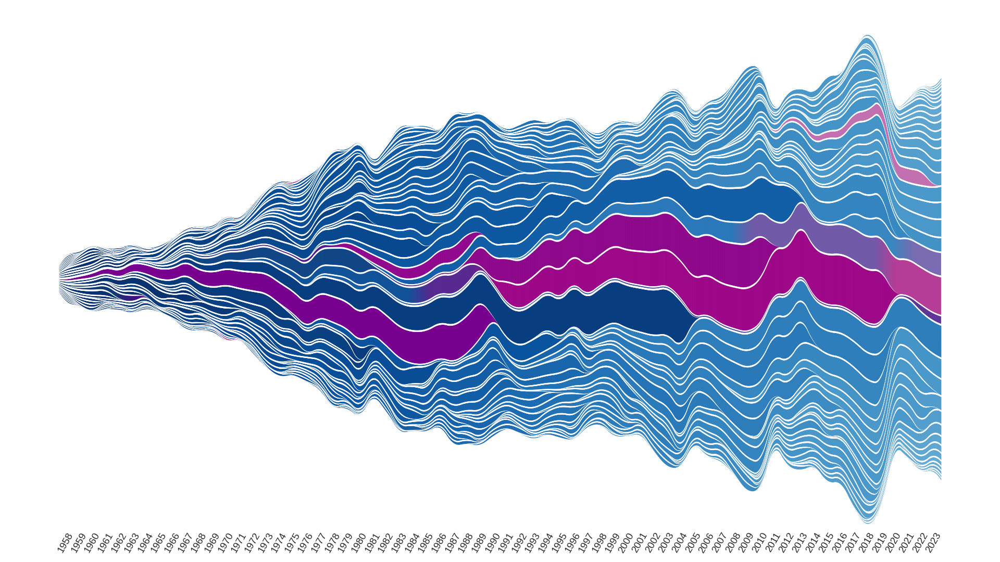

This interactive visualization allows users to explore data from “Generations of Embodied Knowledge: The Alvin Ailey American Dance Theater’s Dance Artists, 1958–2023,” which is part of the Radical Accounting series commissioned for the Edges of Ailey exhibition at the Whitney Museum of American Art (2024-25). We come to see the company as constituted by its many performers and artistic leaders, who retain and transmit the core body of knowledge across generations.
dancers
rehearsal directors
artistic directors


Judith Jamison
Radical Accounting: Alvin Ailey American Dance Theater’s Data as a Framework for Historical Imagination (2022-2025) is by Kate Elswit and Harmony Bench (Moving Data), with Antonio Jiménez-Mavillard and Tia-Monique Uzor. It was commissioned for the Edges of Ailey exhibition at the Whitney Museum of American Art (2024-25) with additional support from: the UK Arts and Humanities Research Council (AHRC, ref: AH/W005034/1); the Royal Central School of Speech and Drama; and The Ohio State University. With special thanks to Adrienne Edwards, Engell Speyer Family Senior Curator and Associate Director of Curatorial Programs at the Whitney Museum of American Art. Personnel data comes from AAADT records, thanks to Ailey Foundation archivist Dominique Singer. Demo voiced by Amos Machanic.